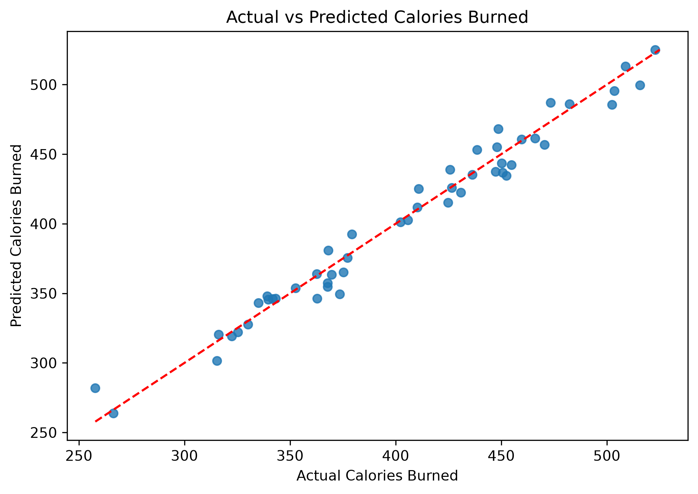
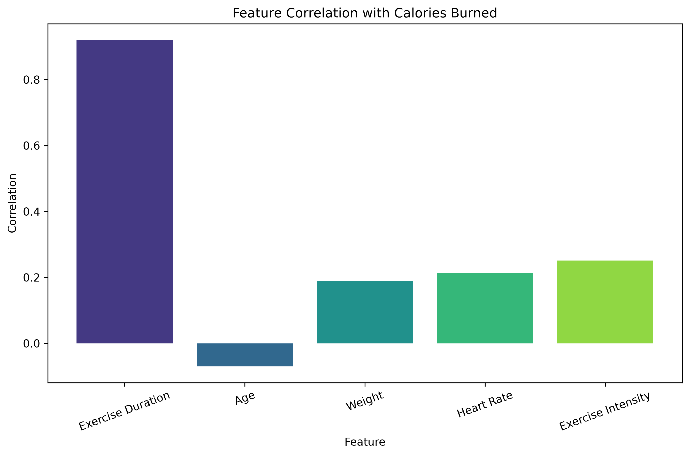
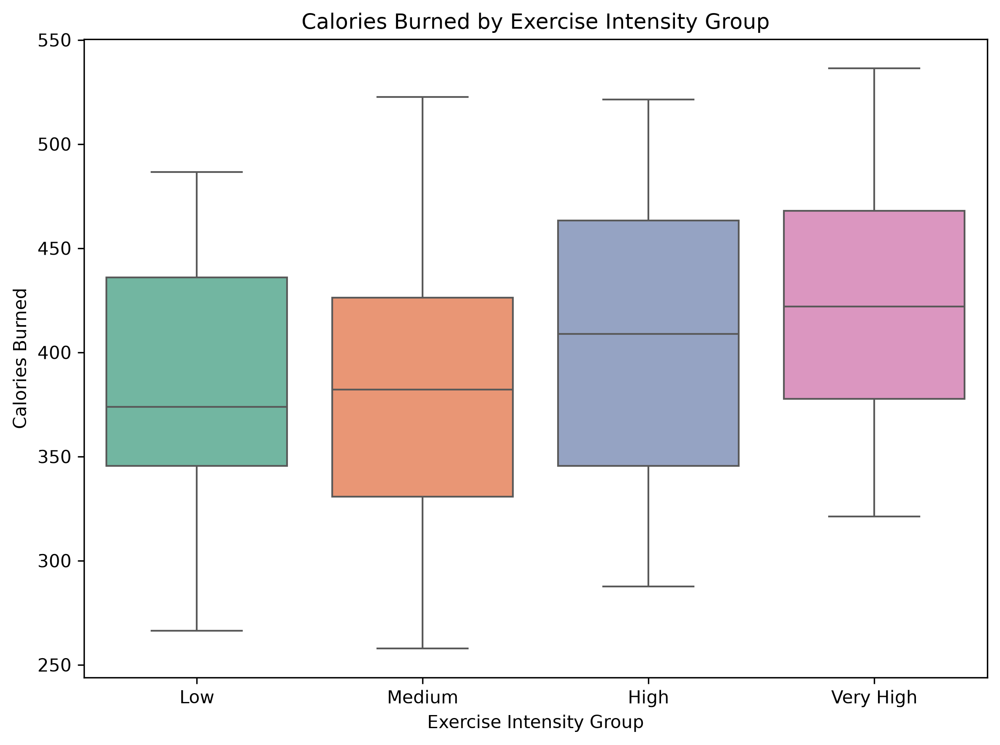

Visual analysis
What the model learned



Machine learning project
A linear regression model estimates calories burned from exercise duration, age, weight, heart rate, and exercise intensity.
Visual analysis


